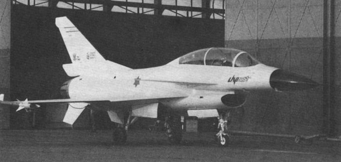

IAI Lavi
Разработчик: Israeli Aircraft Industries
Первый полёт: 31 декабря 1986
Статус: программа закрыта 30 августа 1987
Единиц произведено: 5 прототипов
IAI Lavi – израильский многоцелевой истребитель, который разрабатывался в 1980-х годах компанией Israel Aerospace Industries (IAI). Он задумывался как современный легкий боевой самолет, способный заменить устаревающие модели и дополнить парк ВВС Израиля.
| Двигатель | Максимальная скорость | Боевой радиус | Практический потолок | Вооружение |
|---|---|---|---|---|
| Pratt & Whitney PW1120 | ~1,85 Маха (~1960 км/ч) | 1 100 км | 15 240 м | 1× 30-мм пушка DEFA 553 Подвесное вооружение до 7 260 кг (ракеты "воздух-воздух", "воздух-земля", управляемые бомбы) |
Особенности:
- Современные технологии – оснащался электродистанционной системой управления (FBW) и мощной авионикой.
- Упор на маневренность – имел утки (канарды), улучшавшие подъемную силу и управляемость.
- Экономическая проблема – разработка оказалась слишком дорогой, что привело к ее отмене.
- Американское влияние – проект столкнулся с противодействием США, которые предлагали F-16 как альтернативу.
Почему проект закрыли?
В 1987 году, после успешных испытаний, правительство Израиля отменило программу. Причины:
- Высокая стоимость (~2 млрд $ на разработку).
- Давление США, которые предлагали Израилю закупку F-16C/D вместо разработки собственного самолета.
- Нехватка ресурсов – Израиль предпочел вложиться в развитие существующих ВВС.
Что осталось от Lavi?
Хотя проект закрыли, технологии, разработанные для Lavi, использовались в дальнейшем:
- Израиль поставил авионику и технологии для китайского истребителя J-10.
- Некоторые разработки были применены в модернизации F-16 и F-15 для Израиля.